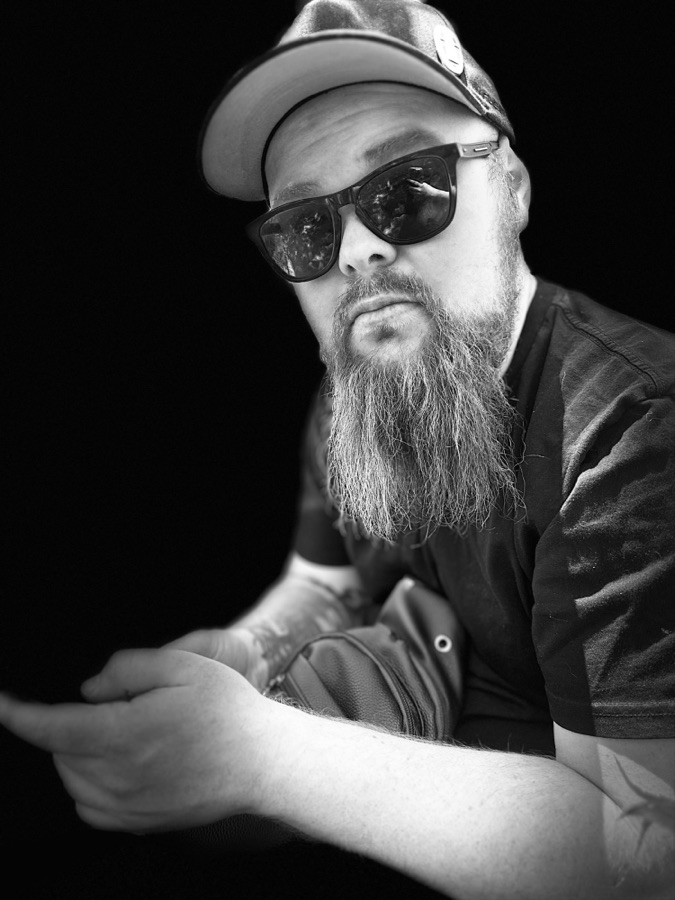

Employr
Pactum Laboris
- IndicationsWhat it does
- Generating employment agreements, and managing the whole employment lifecycle for small and medium-sized businesses, from hiring onward.
- Prescribed forWho it’s for
- Small and medium-sized employers.

The Practice & Remedies of
otherwise known asworking as SmurfWorks
Software, Systems & Sundry Applications for the Working DayIndependent software developer · New Zealand
Being an account of one developer’s independent contracting; of the building and superintendence of job management software and automation; of many years building solutions for the New Zealand legal profession and public alike; of time served in agencies; and a catalogue of small progressive web applications, each made to answer the author’s own requirements.
Glyn is an independent software developer and contractor in New Zealand, focused on job management software and automation. That work draws on building products of Glyn’s own since 2022, seven years of software for the New Zealand legal profession and public, and five years in agencies.
Made in New Zealand MMXXVI
Wherein the practitioner is introduced, the name SmurfWorks explained, and the manner of engagement set down.
Glyn Simpson is an independent software developer and contractor in New Zealand; SmurfWorks is simply the name the work goes by. Glyn takes on engagements directly with the businesses that need the work done, and alongside agencies that need an extra pair of experienced hands. Each engagement begins as a good physician's would: by listening, examining how the work is really done, and only then prescribing.
The remedies are practical. Sometimes that means building new software, sometimes connecting the systems already in place so they share their information properly, and sometimes standing beside a team as its product is planned, built and put to use, keeping the course true from first sketch to daily routine.
2024 to the present day
Of the developing and providing of solutions, and of the oversight of products, for those whose business is the doing of jobs.
Much of Glyn’s present work concerns job management software: the systems that carry a piece of work from first enquiry, through quoting, scheduling and doing, to invoicing and record. Glyn develops and provides these solutions and holds product oversight of them, deciding what is built, in what order, and to what standard, so the software keeps pace with the trade it serves.
Alongside sits the patient work of automation: removing the copying, re-keying and chasing that quietly consume a working week, so that people may attend to the work only they can do.
2022 to the present day
Wherein the practitioner, having served others, sets up a dispensary of their own and compounds products under their own name.
After the legal years came a turn toward Glyn’s own products. Rather than building to another’s prescription, Glyn set out to find problems worth solving, shape a product around each, and carry it from first idea through design, build and launch to the people it was made for. Two preparations have come from this work so far: Employr, for employers, and We Eat Well, for the kitchen.
Owning a product end to end teaches what no brief can: deciding what to leave out, weighing every feature against the time it costs, and living with the consequences of each decision long after release. That experience of owning a product, not just building it, runs alongside, and informs, the product oversight described in the chapter before.
Pactum Laboris
Liber Coquinae
2015 – 2022
Being the record of a long course of treatment, its method, and its happy conclusion.
From 2015 to 2022, Glyn spent seven years building software solutions for the New Zealand legal profession and the public it serves. The law keeps exacting standards: matters must be tracked without error, time and trust accounting must balance to the cent, and every document must be exactly where it should be. Software for lawyers and their clients must be precise, dependable, and built with real understanding of how legal work is done, both inside a practice and by the people who come to it.
That work was carried through from development into a mature product relied upon by legal practitioners and members of the public, and concluded in a successful exit. The lessons of that time, on rigour, on listening closely to specialist users, and on building software that people trust with their livelihoods, inform every engagement since.
Outcome. Solutions built for New Zealand’s legal profession and public alike, brought to maturity, and concluded with a successful exit.
2010 – 2015
Concerning years spent in agency practice, and what the busy ward teaches that the quiet study cannot.
Part of Glyn’s training was served inside agencies, where many clients, many deadlines and many kinds of project pass through the same hands in a single season. Agency work is a hard and useful school. It demands quick diagnosis of an unfamiliar business, an honest estimate given early, and delivery to a fixed date without loss of quality.
It also teaches the craft of working within a team: handing work cleanly between designers, developers and account managers, keeping clients informed without burying them in detail, and knowing when to raise a concern before it becomes a problem. Glyn has carried these habits into everything since, and is just as comfortable working alongside an agency's own team as working directly with a business.
A catalogue of Glyn’s progressive web applications, published as SmurfWorks, each to be installed upon the telephone and taken as required. The formulae are kept openly at github.com/smurfworks.
Tinctura Temporis
Elixir Pecuniae
Pilulae Memoriae
Calculus Insulini
Caution: applies your own ratios only, and does not replace a diabetes care plan.
Apparatus Nuntii
Sortes Armamentorum